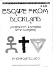

HISTORY, 1993-1998
In early 1993, John Castellucci began distributing printed copies of Escape from Duckland. This was the immediate precursor to RuneQuest Adventures. The first actual issue of RuneQuest Adventures saw print in Summer of 1993. A 32 page zine, it presented Escape from Duckland once more. Up to issue 5, RuneQuest Adventures was published on somewhat less then a quarterly basis. Between issues 5 and 6 there was a considerable hiatus. #6 is the last issue of RQA. There was some talk of reviving the magazine as Hero Wars Adventures after the release of the new game, but this this has not happened to date.
THEME ISSUES
COLLECTIONS
RuneQuest Adventures is a magazine abour RuneQuest and the world of
Glorantha. Thus, this index is an organization of Gloranthan
RuneQuest topics. Articles specifically with stats are marked [RQ3], to differentiate them from system independent articles.
COPYRIGHT
This index is © Copyright 1994-2020 Shannon Appelcline. It is released under a cc-by-4.0 license, allowing reuse with attribution.
ACCESSORIES
Illustrations:
Dwarf Mine, Sartar Illustration #5 pg INSERT
Maps:
Eastern Stinking Forest Map, by Castellucci & Boyle #6 Inside Cover
Northern Dragon Pass Map #2 pg 14-15
BEST pg 49-50
Southern Dragon Pass Map, by John Castellucci #1 pg 24
BEST pg 48
ADVENTURES, MISC
Races, Dragons:
Dreams Dragons Bring [RQ3], by John Castellucci #2 pg 1-18
BEST pg 21-33
ADVENTURES, GENERTELA, CENTRAL
Dragon Pass, Sartar:
After Taxes [RQ3], by John E. Boyle #4 pg 18-24
Dreams Dragons Bring [RQ3], by John Castellucci #2 pg 1-18
BEST pg 21-33
Dwarf Mine, Sartar Illustration #5 pg INSERT
Escape from Duckland [RQ3], by John Castellucci #1 pg 1-20,25-32
BEST pg 1-20
Gondo's Revenge [RQ3], by Appelcline, Rowe, Castellucci & Castellucci
#5 pg 12-31
Mad Baron Voorstik [RQ3], by Steven Crabb & MOB #5 pg 1-4
On the Trail of Quackodemon [RQ3], by John Castellucci
#2 pg 29-32
Dragon Pass, Snake Pipe Hollow:
Gondo's Revenge [RQ3], by Appelcline, Rowe, Castellucci & Castellucci
#5 pg 12-31
Dragon Pass, Stinking Forest:
The Cave Tree [RQ3], by Castellucci & Boyle #6 pg 11-18
The Plant Maze {RQ3], by Castellucci & Boyle #6 pg 19-21
Holy Country, Heortland:
The Fall of Whitewall [RQ3], by John Castellucci #4 pg 10-17
Prax, Sacred Prax, Misc:
Bull by the Tale [RQ3], by John Castellucci #3 pg 1-4
Prax, Sacred Prax, The Block:
The Devil's Bones [RQ3], by John Castellucci #3 pg 25-29
BEST pg 43-47
Devil's Swamp [RQ3], by John Castellucci & John Boyle
#3 pg 9-17
BEST pg 34-42
(1) Originally published in the RQ DIGEST. Later printed as the ESCAPE
FROM DUCKLAND 'zine.
BACKGROUND, MISC
Games:
Rune Dice Game, by John Castellucci #2 pg 19-20
Plants:
Chaotic Plants [RQ3], by Eric Rowe #5 pg 14,17,21-25
Plants of the Southern Kingdom [RQ3], by Eric Rowe #4 pg 8-9
Plants of the Swamp [RQ3], by Eric Rowe & John Castellucci
#3 pg 19-20
BEST pg 52-53
Some Elf Plants, by Castellucci & Boyle #6 pg 21
Trees of the Stinking Forest, by John Boyle #6 pg INSERT
Prophecies:
Prophecies of Isidilian, by Eric Rowe #5 pg 15-16,18,22+
BACKGROUND, GEOGRAPHICAL, GENERTELA
Dragon Pass, Sartar, Misc:
The Dragon's Eye and Environs, by John Castellucci (1)
#2 pg 14-15
Duckland Encounter Table, by John Castellucci #2 pg 34-35
A Guide to Northern Sartar, by Appelcline, Rowe, Castellucci & Castellucci
#5 pg 5-11
Northern Dragon Pass Map #2 pg 14-15
BEST pg 49-50
Southern Dragon Pass Map, by John Castellucci #1 pg 24
BEST pg 48
Dragon Pass, Sartar, Jonstown:
A Gazetteer of Jonstown BEST pg 57-62
Dragon Pass, Snake Pipe Hollow:
Snake Pipe Hollow, by Appelcline, Rowe, Castellucci & Castellucci
#5 pg 5-11
SPH Encounter Table, by John Castellucci #5 pg 34-35
The Story of Kagradus Fort, by Shannon Appelcline #5 pg 20
Dragon Pass, Stinking Forest:
Eastern Stinking Forest Map, by Castellucci & Boyle #6 Inside Cover
Secrets of the Tallseed [RQ3], by Castellucci & Boyle
#6 pg 1-10
Stinking Forest Encounters, by Castellucci & Boyle #6 pg 22-25
Western Stinking Forest Map, by Castellucci & Boyle #6 Inside Cover
Holy Country, Heortland, Misc:
City of the White Walls, by John Castellucci #4 pg 1-7
White Wall Encounter Table, by John Castellucci #4 pg 34-35
Holy Country, Heortland, Plants:
Plants of the Southern Kingdom [RQ3], by Eric Rowe #4 pg 8-9
Prax, Pavis:
Chart of the Month, by John Castellucci #2 pg 33
Prax, Sacred Prax, Misc:
The Block, by John Castellucci #3 pg 6-8
Block Encounter Table #3 pg 30-31
Prax, Sacred Prax, Plants:
Plants of the Swamp [RQ3], by Eric Rowe & John Castellucci
#3 pg 19-20
BEST pg 52-53
CAMPAIGN DESIGN
Maps:
Chart of the Month, by John Castellucci #2 pg 33
Tables, Random, Encounters:
Block Encounter Table #3 pg 30-31
Duckland Encounter Table, by John Castellucci #2 pg 34-35
SPH Encounter Table, by John Castellucci #5 pg 34-35
Stinking Forest Encounters, by Castellucci & Boyle #6 pg 22-25
White Wall Encounter Table, by John Castellucci #4 pg 34-35
CULTS
Misc, Full Cult Writeups:
Hueymakt [RQ3], by John Castellucci #1 pg 21
Quackodemon [RQ3], by John Castellucci #2 pg 27-28
Misc, Gloranthan Voices:
What the Beak Quacks (Ducks), by John Castellucci #1 pg 22
What the Storm Kahn Says (Storm Bull), by Troy Bankert
#3 pg SI1-SI4
Chaos, Cacodemon:
The Cult of Quackodemon [RQ3], by John Castellucci #2 pg 27-28
Ducks, Misc:
Duck Mythology & Notes, by Stephen Martin #2 pg 21-26
What the Beak Quacks, by John Castellucci #1 pg 22
Ducks, Hueymakt Deathdrake:
The Cult of Hueymakt [RQ3], by John Castellucci #1 pg 21
Ducks, Quackodemon:
The Cult of Quackodemon [RQ3], by John Castellucci #2 pg 27-28
Orlanthi, Humakt:
The Cult of Hueymakt [RQ3], by John Castellucci #1 pg 21
Praxian, Misc:
The Praxian Creation Story, by Scott Schneider #3 pg SI4
Praxian, Storm Bull:
Storm Bull Cult Notes [RQ3], by T. Bankert, C. Einsporn & D. Fahey (1)
#3 pg 21-22
BEST pg 53-55
Storm Bull Rituals, by John Castellucci #3 pg 23-24
BEST pg 55-56
What the Storm Kahn Says, by Troy Bankert #3 pg SI1-SI4
Dancing Snake:
Cult of the Dancing Snake, by Denise Castellucci #5 pg 32-33
INTERVIEWS
NPCs:
Isidilian the Wise, by Eric Rowe #5 pg INSERT
NPCS
Dragon Pass, Sartar:
Isidilian the Wise Interview, by Eric Rowe #5 pg INSERT
Rebellion in Sartar [RQ3], by John Castellucci #4 pg 25-28
Sample Player Characters [RQ3], by John Castellucci
#1 pg 25-32
BEST pg i-v
Holy Country, Heortland:
Player Characters [RQ3], by Denise and John Castellucci
#4 pg 29-32
Prax, Sacred Prax:
Ankubi Broostalker [RQ3], by John E. Boyle (1) #3 pg 5
Gnashir Blackcloud [RQ3], by John E. Boyle #3 pg 18
(1) Originally printed in BORDERLANDS (Chaosium 4015-X)
RACES
Ducks:
What the Beak Quacks, by John Castellucci #1 pg 22
Mostali:
Isidilian the Wise Interview, by Eric Rowe #5 pg INSERT
VIGNETTES:
Dragon Pass, Stinking Forest:
Adventure Ideas, by Castellucci & Boyle #6 pg 26
Other Gaming Resources: [
More Magazine
Indices |
Ars Magica
Campaigns ]
MAIN INDEX